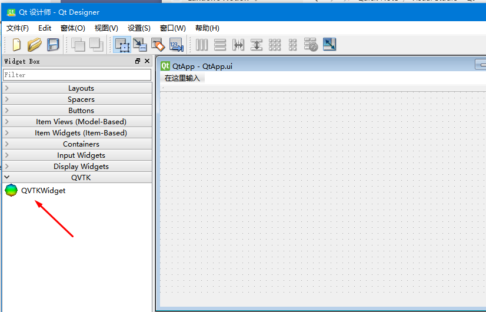

Visual Studio+ Qt + VTK 环境配置
最终选择的版本为 Visual Studio Community 2019。不选择最新的 VS 2022 是因为 Qt6 配置会出现一些问题，在使用 CMake 编译 VTK 时，只能选择 Qt Version = 5。（问题为 Qt Designer 无法加载 VTKWidgets）
1. 安装提示
（1）下载 VTK 源码文件：VTK-8.2.0.zip ，解压，创建 build 和 VTK-PREFIX 文件夹；
（2）下载安装 CMake，配置环境变量；
- 使用 cmake-gui 编译时，
VTK_Group_Qt记得打勾✔；
（3）使用 VS 打开 build 目录下的 VTK.sln
- 右键
ALL_BUILD，点击“生成”； - 右键
INSTALL，选择“仅用于项目(J)/仅生成INSTALL(B)”
（4）安装 Qt 5：qt-opensource-windows-x86-5.10.1.exe
- 记得选择 mscv 编译器（可以全选）
2. VS 2019 + Qt 5.10.1 + VTK 8.2.0
完成 “1. 安装提示” 后，会生成 QVTKWidgetPlugin.dll 文件，路径如下：
VTK-8.2.0/VTK-FREFIX/plugins/designer/QVTKWidgetPlugin.dll
将此文件拷贝到如下路径之下：
Qt\5.10.1\msvc2017_64\plugins\designer
这样 Qt Designer 将获得 VTK 组件，如下图所示。

接下来配置 Qt，使得 Qt 项目可以运行。首先安装 Qt Visual Studio Tools： qt-vsaddin-msvc2019-2.5.1.vsix，下载地址 https://download.qt.io/official_releases/vsaddin/2.5.1/。
创建新项目，选择 Qt Widgets Application；
下图是配置好了才会有，没有也没有关系。后面会配置；

下图开始配置 Qt 编译器：

配置 QMake.exe 的路径：

右键项目选择“属性”，如下两项需要注意：

关于 VTK 的配置：
（1）VC++目录下的“包含目录”，设置为 VTK-PREFIX/include 目录

（2）链接器/输入/附加依赖项，设置为 VTK-PREFIX/lib/*.lib

（3）动态库 .dll 文件
将 VTK-8.2.0\VTK-PREFIX\bin 目录下的所有 .dll 文件拷贝到与工程 main.cc 同一路径之下，即可运行。
VTK 测试程序
#include <vtkActor.h>
#include <vtkCamera.h>
#include <vtkCellArray.h>
#include <vtkFloatArray.h>
#include <vtkNamedColors.h>
#include <vtkNew.h>
#include <vtkPointData.h>
#include <vtkPoints.h>
#include <vtkPolyData.h>
#include <vtkPolyDataMapper.h>
#include <vtkRenderWindow.h>
#include <vtkRenderWindowInteractor.h>
#include <vtkRenderer.h>
#include <array>
#include "vtkAutoInit.h"
VTK_MODULE_INIT(vtkRenderingOpenGL2);
VTK_MODULE_INIT(vtkInteractionStyle);
VTK_MODULE_INIT(vtkRenderingVolumeOpenGL2);
#define vtkRenderingCore_AUTOINIT 4(vtkInteractionStyle,vtkRenderingFreeType,vtkRenderingFreeTypeOpenGL2,vtkRenderingOpenGL2)
#define vtkRenderingVolume_AUTOINIT 1(vtkRenderingVolumeOpenGL2)
int main()
{
vtkNew<vtkNamedColors> colors;
std::array<std::array<double, 3>, 8> pts = { {{{0, 0, 0}},
{{1, 0, 0}},
{{1, 1, 0}},
{{0, 1, 0}},
{{0, 0, 1}},
{{1, 0, 1}},
{{1, 1, 1}},
{{0, 1, 1}}} };
// The ordering of the corner points on each face.
std::array<std::array<vtkIdType, 4>, 6> ordering = { {{{0, 1, 2, 3}},
{{4, 5, 6, 7}},
{{0, 1, 5, 4}},
{{1, 2, 6, 5}},
{{2, 3, 7, 6}},
{{3, 0, 4, 7}}} };
// We'll create the building blocks of polydata including data attributes.
vtkNew<vtkPolyData> cube;
vtkNew<vtkPoints> points;
vtkNew<vtkCellArray> polys;
vtkNew<vtkFloatArray> scalars;
// Load the point, cell, and data attributes.
for (auto i = 0ul; i < pts.size(); ++i)
{
points->InsertPoint(i, pts[i].data());
scalars->InsertTuple1(i, i);
}
for (auto&& i : ordering)
{
polys->InsertNextCell(vtkIdType(i.size()), i.data());
}
// We now assign the pieces to the vtkPolyData.
cube->SetPoints(points);
cube->SetPolys(polys);
cube->GetPointData()->SetScalars(scalars);
// Now we'll look at it.
vtkNew<vtkPolyDataMapper> cubeMapper;
cubeMapper->SetInputData(cube);
cubeMapper->SetScalarRange(cube->GetScalarRange());
vtkNew<vtkActor> cubeActor;
cubeActor->SetMapper(cubeMapper);
// The usual rendering stuff.
vtkNew<vtkCamera> camera;
camera->SetPosition(1, 1, 1);
camera->SetFocalPoint(0, 0, 0);
vtkNew<vtkRenderer> renderer;
vtkNew<vtkRenderWindow> renWin;
renWin->AddRenderer(renderer);
vtkNew<vtkRenderWindowInteractor> iren;
iren->SetRenderWindow(renWin);
renderer->AddActor(cubeActor);
renderer->SetActiveCamera(camera);
renderer->ResetCamera();
renderer->SetBackground(colors->GetColor3d("Cornsilk").GetData());
renWin->SetSize(600, 600);
// interact with data
renWin->Render();
iren->Start();
return EXIT_SUCCESS;
}
程序运行结果：